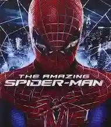

The Amazing Spider-Man (2012)

Una reinterpretación del origen de Spider-Man. Peter Parker investiga el misterio detrás de la desaparición de sus padres mientras descubre sus poderes. Se enfrenta al Lagarto, un científico que busca curar enfermedades genéticas pero termina transformándose en un monstruo.
The Amazing Spider-Man 2 (2014)

Peter Parker continúa su vida como Spider-Man, intentando equilibrar su relación con Gwen Stacy y su responsabilidad como héroe. Mientras investiga el pasado de sus padres, descubre más sobre los secretos que dejaron atrás y su conexión con Oscorp.
La ciudad enfrenta una nueva amenaza cuando Max Dillon, un empleado solitario de Oscorp, sufre un accidente que lo transforma en Electro, un ser capaz de controlar la electricidad y que desarrolla una peligrosa obsesión con Spider-Man.
A la vez, Harry Osborn regresa para buscar la cura de su enfermedad genética y, al sentirse traicionado por Peter y Oscorp, termina convirtiéndose en un nuevo Duende Verde.
En la batalla final, Spider-Man intenta detener a Electro y al Duende Verde, pero la confrontación termina en una tragedia: Gwen Stacy muere, lo que deja a Peter devastado y alejado temporalmente de su rol como héroe.
La película cierra con un mensaje de esperanza cuando Peter decide volver a ser Spider-Man, inspirado por el recuerdo de Gwen.